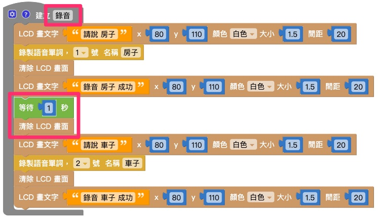

语音辨识
Web:AI 能够将收录到的声音转换成数字信号，经过处理后储存成声音模型，当侦测到声音时，会开始和开发板储存的声音模型比对音色、频率，进而得到辨识结果。
录制语音
「录制语音」积木能够通过开发板上的麦克风接收声音，并转换成声音模型储存，开发板中最多可以同时储存 10 个模型并做辨识。
- 录音的时间约 1.5 秒
- 录制完所生成的声音模型会一直存放在开发板中，除非经过固件更新或擦除，或是录制时采用了相同编号而把旧的模型覆盖掉。
使用「录制语音」积木建立声音模型并不会覆盖 教学示例卡：语音互动 中的声音模型，可以放心使用！
欢迎参考：教学示例卡使用教学：语音互动。
语音辨识
当开发板的麦克风侦测到声音时，如果符合声音模型，就会自动执行「语音辨识」积木中的内容。
「语音辨识」积木的号码和名称会和「录制语音」积木互相对应。
语音辨识门槛
因为每个人的音色、频率都不同，所以针对不同应用需要调整辨识门槛才能达到合适的效果。 而「语音辨识门槛」是语音辨识的精准度，门槛越高代表声音越像才会辨识成功。
「语音辨识门槛」积木需要放在「语音辨识」积木之前！

示例：声控图案
录音
结合「画文字」积木和「录制语音」积木，录音时显示「请说 XX」；录音完成时显示「录音 XX 完成」。

做出另一组相同的积木，如下图：
将 1. 和 2. 的两组积木组合，并用「等待」积木和「清除 LCD 画面积木」隔开，再放入「函数」积木中，将函数命名为「录音」。

将函数「录音」放入「开发板」积木中，在下方再放入其它积木，如下图即完成录音程序。
辨识
首先放入「语音辨识门槛」积木，可以根据辨识的状况改变门槛高低。

使用「语音辨识」积木，当听到录制的单词时，会做出后续的程序。
复制 2. 的积木，并做出另一组积木。

将积木组合，按下执行即可在Web:AI上执行语音辨识应用。